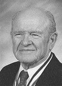

|
|
Kathleen ‘Kathy’
Anita Coleman
THE COLONY — Kathleen “Kathy” Anita Coleman, 52, of 4518 Carr
Street, The Colony, Texas, born on March 7, 1952, in Morton,
Texas, died on May 14, 2004.
She graduated from Odessa High School in 1970, attended Texas
Tech University and Odessa Junior College, and was a member of
Beta Sigma Phi, pursuing a double major of psychology and
sociology. She was an employee for 18 1/2 years for the Federal
Deposit Insurance Corporation as a Loan Workout Specialist and
was elected President of the Union.
She leaves behind to cherish her memory her children, Kaitlin
Melka and Cole Melka of The Colony; mother, Anita Wood of
Odessa; sister, Nancy Hall and family of Tom Bean; and brother,
Daniel Yarbro and family of Post.
A small memorial service will be held at 1 p.m. Saturday, May
22, 2004, at the Pavilion in Lions Club Park, The Colony.
Donations in lieu of flowers may be made to Christian Community
Action, 200 South Mill Street, Lewisville, TX 75057 or The
Colony Library, 6800 Main Street, The Colony, TX 75056. Kathy
will always be remembered for her brilliance, sense of humor,
and commitment and dedication to helping and loving others.
|
|
 |
William ‘Bill’ Anderson Garrard
Sr.
MONAHANS — William Anderson Garrard Sr., “Bill,” 83, of Wickett,
passed away Tuesday, May 18, 2004, at Medical Center Hospital
after a sudden illness. He was born November 1, 1920, to Ethel
Ora Jackson and John Mason Garrard in Crystal Falls, Texas.
He is survived by his wife, Joyce of the home; two sons, William
Anderson Garrard Jr. and wife, April, of Phoenix, Ariz.; Patrick
Alan Garrard and wife Deanna of Amarillo, Texas; one grandson
Justin Alan Garrard and wife, Tawny of Chandler, Arizona; and
three other “furry grandchildren,” Moxie, Suzie and Gracie of
Amarillo, Texas. He is also survived by one sister, Luvenia
Ellen Holt of Dallas and one brother, Thomas Jackson Garrard of
Euliss, Texas. He was preceded in death by his first wife,
Harriet Jane Ryerson “Hap” in 1996; his mother Ethel and father
John; Brother Glenn Edwin, Sisters Venita Catherine Lantron and
Arvilla Lorraine Pollard. He was married to Ruby Joyce Claburn
on November 3, 2000. His blended family includes three other
sons and one daughter; Chuck and wife Nancy Claburn of Midland,
Mike and wife Carla Claburn of Monahans; Mark and wife Sarah
Claburn of Dallas; Patti and husband Mike Stevenson of San
Antonio; twelve grandchildren, Chasity and husband Kevin Kemp,
Carrie and husband Steve Watson, Chad and wife Melissa Claburn,
Brent Stevenson, Lauren Stevenson, Rachel Stevenson, Bradley
Stevenson, Michael Claburn, Taryn Claburn, Jacob Claburn and
Kate Claburn; and four great-grandchildren, Bailey Kemp, Foster
Kemp, Austin Watson and Makaila Claburn.
Bill served in the Texas National Guard for 3 years in
Breckenridge, Texas, before being mobilized into the regular
Army in November 1940. He attained the rank of Staff Sergeant
and was awarded several medals, including the Unit Commendation
Medal with four battle stars, Bronze Star for Bravery, French
Croix de Guerre and the Purple Heart.
Bill worked for Gulf Oil Company for 37 years before retiring.
He served as a proud member of First United Methodist Church of
Wickett for over 50 years where he served in many positions,
including Church Representative to Conference, Lay Leader,
Sunday School Teacher, Chairman of the Board and Song Leader. It
was Bill’s early efforts and those of the other church members
that built the current church sanctuary literally with nothing,
in 1956-’57. He hosted regular Bible Study groups in the home,
radiating joy, compassion, tenderness and the love of God. He
was a true servant of God.
In addition to his dedicated church service, Bill was an elected
member of the Wickett City Council and volunteer for several
organizations. His activities included: Gleaners food deliverer
for 20 years, Meals-on-Wheels for disabled for 20 years, song
leader for Sing-A-Longs at the Senior Citizen Center and
bingo-caller at the Center for the past 10 years. Bill has been
among the “Stars at the Senior Citizen Revue” for 10 years,
which helped to raise money for Meals on Wheels. When the boys
were growing up he served as Assistant and Head Scoutmaster for
Boy Scouts of America, was an ardent member and fund-raiser for
the Quarterback Club and Band Boosters, 4-H Club Booster and
Little League Baseball Coach. He loved Lobo football, fishing,
hunting and all sports. He was most recently honored as the Star
Veteran of Ward County.
Bill was known to be a kind, fun-loving person, always had a
smile on his face and a story of inspiration to tell. He loved
to dance with his wife Joyce, had a special nickname for
everyone he met and excelled at “showing out.” As a result of
the hearing loss suffered from his military duty he often turned
his misunderstood words into hilarious and cute retorts to the
confusion and amusement of those who knew him best. Bill
faithfully attended and supported his Company “L” reunions from
their earliest days and enjoyed attending family reunions. He
will be greatly missed by all.
Funeral services will be Thursday, May 20, 2004, at 2 p.m. in
the First United Methodist Church of Monahans. Interment will
follow in the Monahans Memorial Cemetery.
There will be a viewing at Heritage Funeral Home. In lieu of
flowers, donations may be made to the Wickett United Methodist
Church Building Fund.
|
{kind=link}